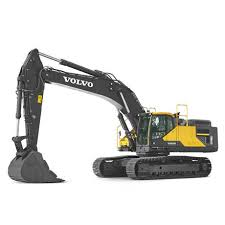

Volvo EC480E är en kraftfull och bränsleeffektiv bandgrävmaskin på upp till 53 ton, idealisk för gruvdrift, stenbrott och stora anläggningsarbeten. Med avancerad hydraulik, robust konstruktion och förarvänlig design kombinerar den prestanda, effektivitet och hållbarhet för de mest krävande projekten.